Part 19
19.This will be a short update because I have stuff I need to take care of today and I have strep throat so I feel like crap but of all of the updates that could get away with being short, this is one of the most fitting.
BGM: 10-yuri.ogg.
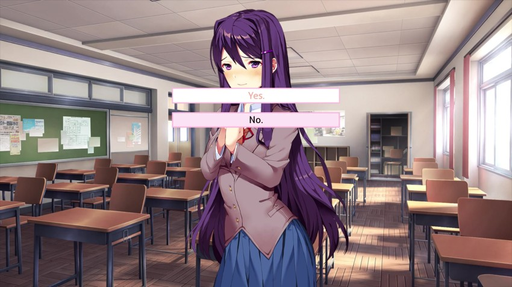
I highly recommend that you watch the upcoming scene at the following link - the music and effects are important to experience the game properly. I fully understand if you choose not to - If that's the case, scroll down for the standard format.
There will be no commentary in this update. I'll see you all tomorrow.
http://www.polsy.org.uk/play/yt/?vu...yFJ0&autoplay=1
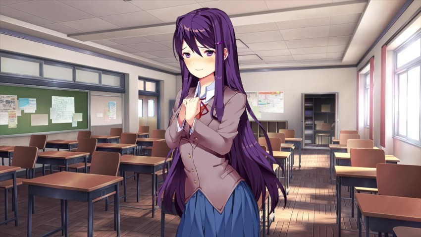
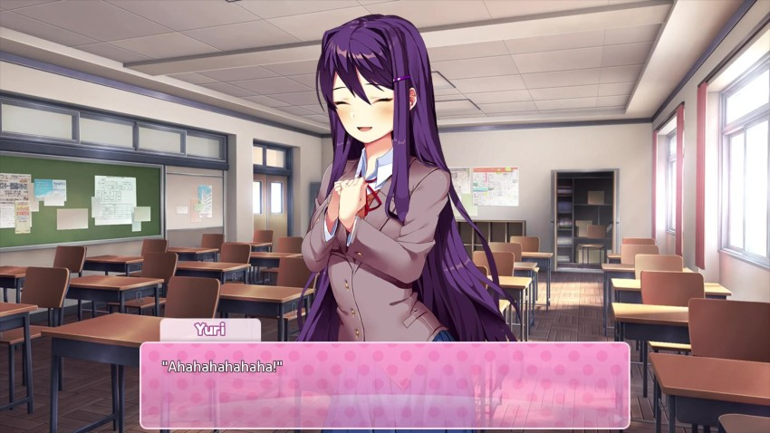
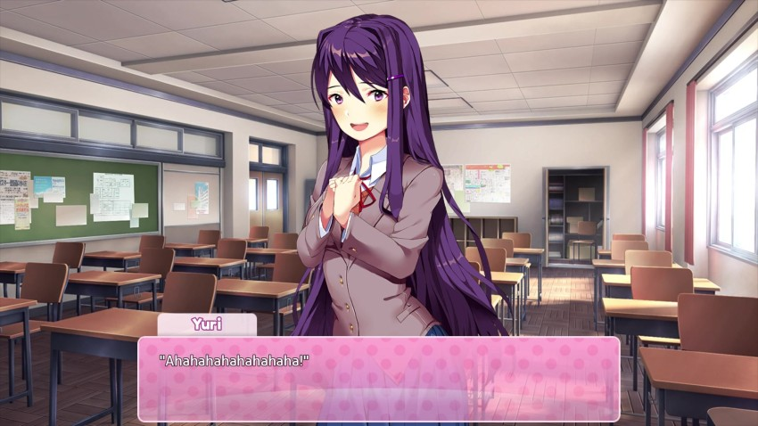
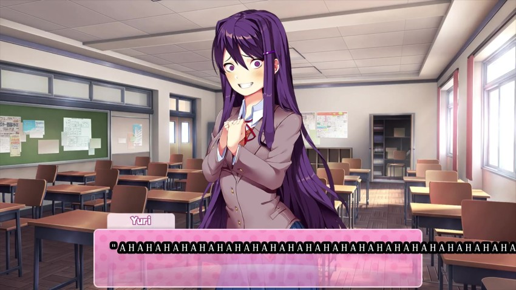

BGM: 6s.ogg. From the Wiki: This track is Play With Me slowed down four times.
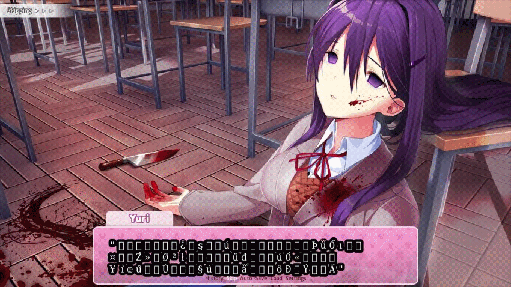

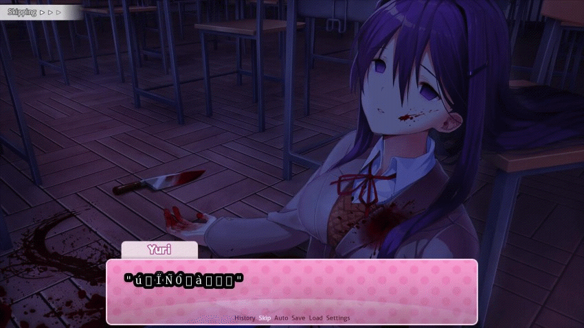
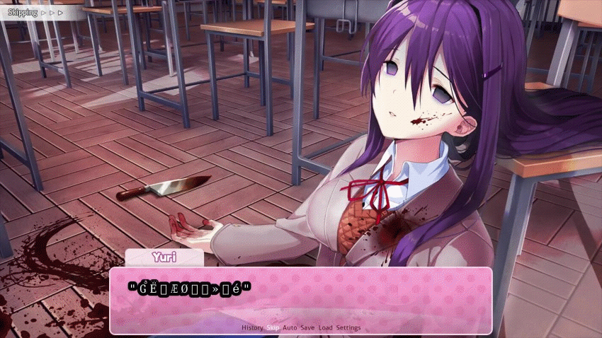
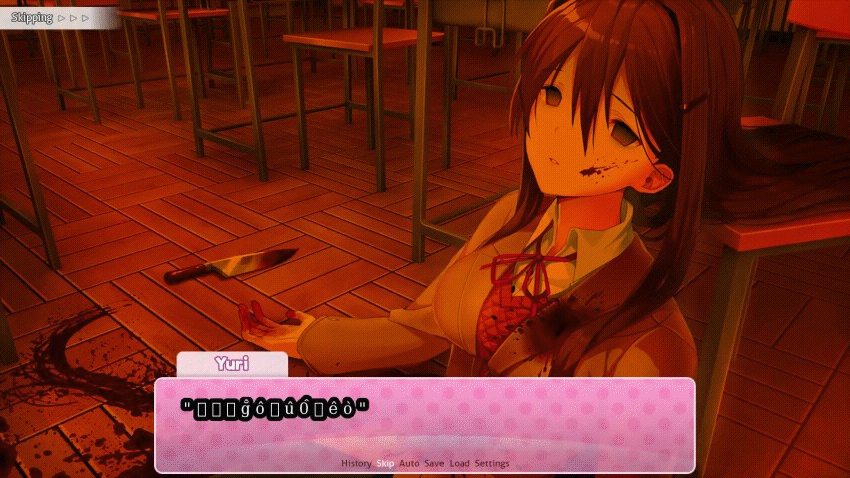
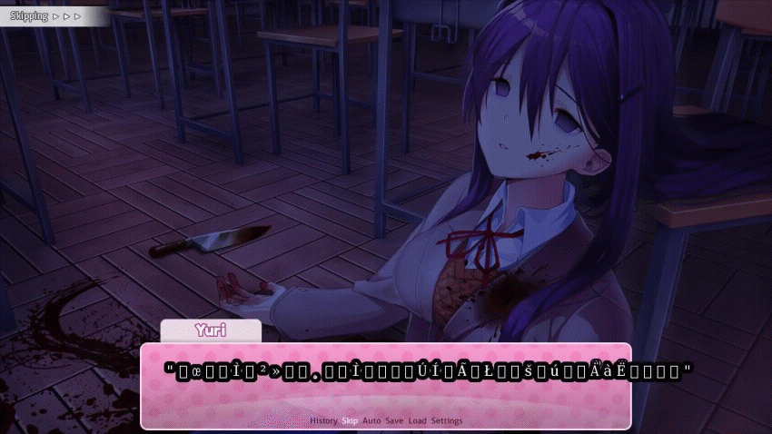
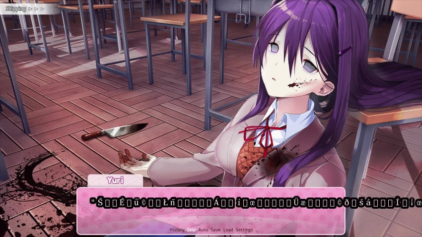
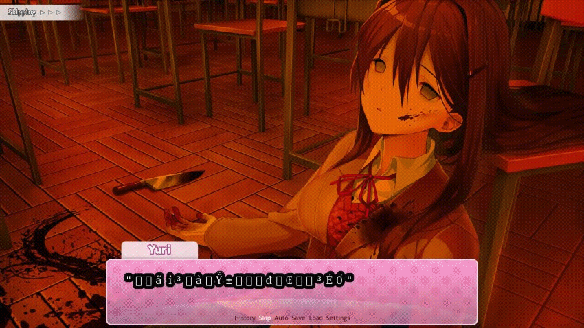
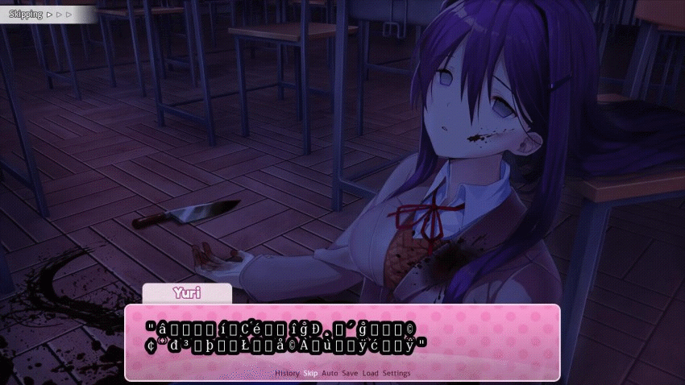
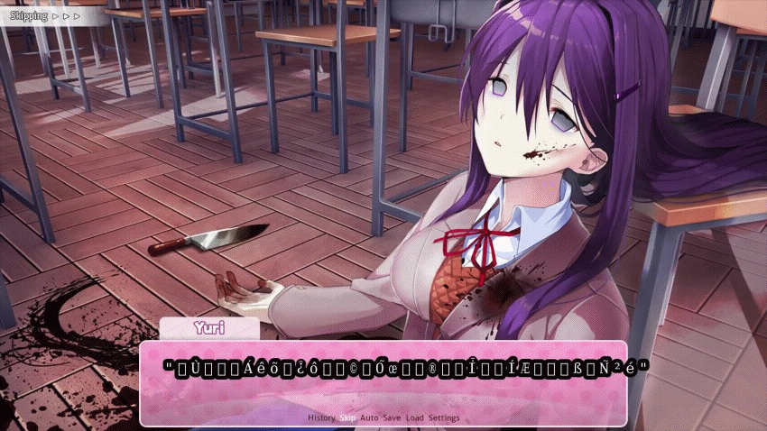
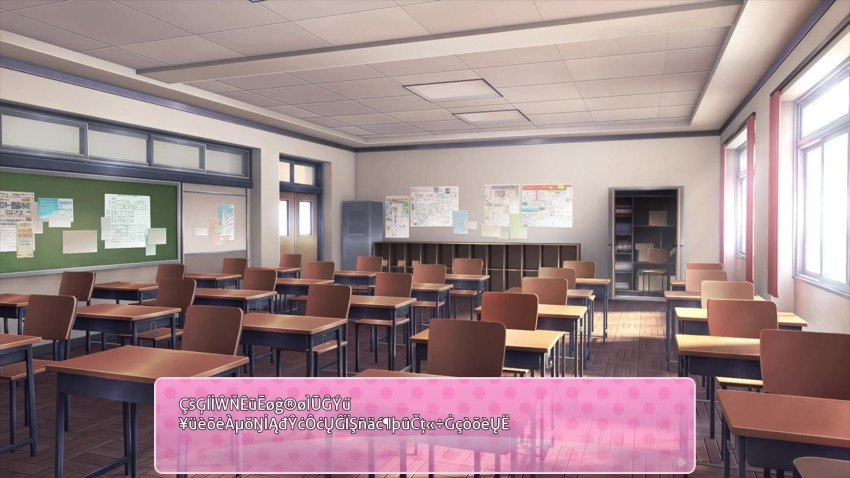
 : Alright, it's festival time!": Wow, you got here before me? I thought I was pretty ea--"
: Alright, it's festival time!": Wow, you got here before me? I thought I was pretty ea--"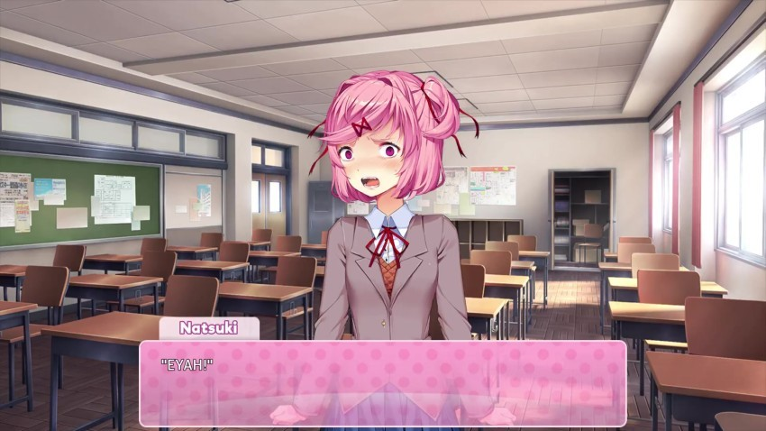
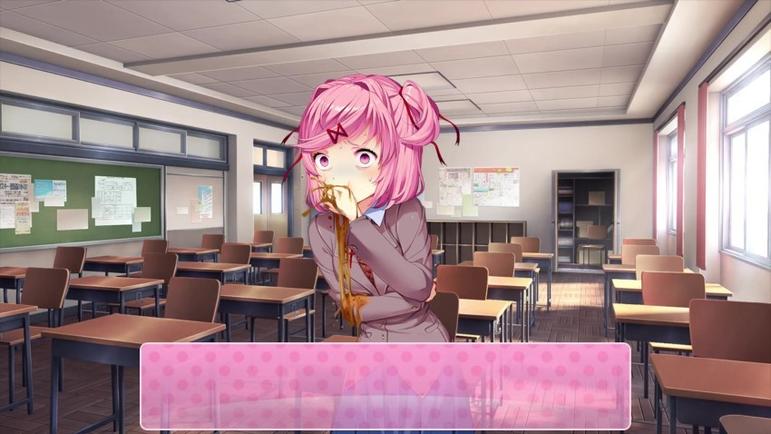
Natsuki runs away.
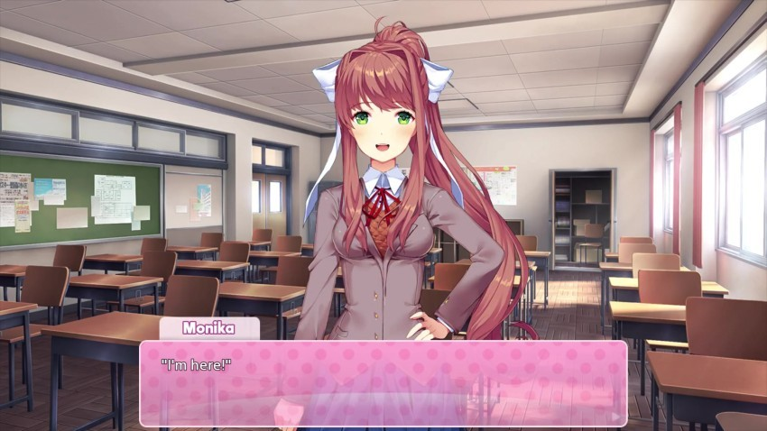
 : Mitayo, did something happen? Natsuki just ran past me...": ...Oh...": ...Oh.": ...": Well, that's a shame. Wait, were you here the entire weekend, Mitayo? Oh, jeez...": I didn't realize the script was broken that badly.": I'm super sorry! It must have been pretty boring...": I'll make it up to you, okay? Just gimme a sec..."
: Mitayo, did something happen? Natsuki just ran past me...": ...Oh...": ...Oh.": ...": Well, that's a shame. Wait, were you here the entire weekend, Mitayo? Oh, jeez...": I didn't realize the script was broken that badly.": I'm super sorry! It must have been pretty boring...": I'll make it up to you, okay? Just gimme a sec..." : Im almost done. I just want to have a cupcake real quick!"
: Im almost done. I just want to have a cupcake real quick!" : Seriously, these are the best! I really just had to have one, since it's the last time I'll ever get the chance to.": You know, before they stop existing and everything.": ...But anyway, I really shouldn't be making you wait any longer. Just bear with me, okay?": This should only take a second."
: Seriously, these are the best! I really just had to have one, since it's the last time I'll ever get the chance to.": You know, before they stop existing and everything.": ...But anyway, I really shouldn't be making you wait any longer. Just bear with me, okay?": This should only take a second."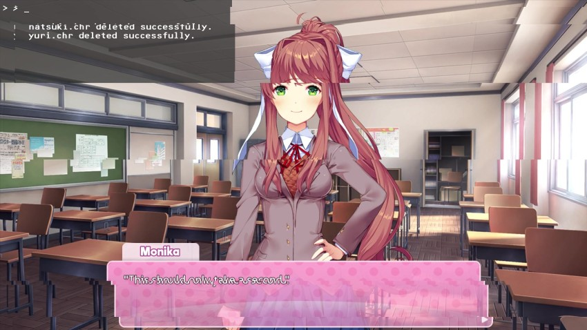
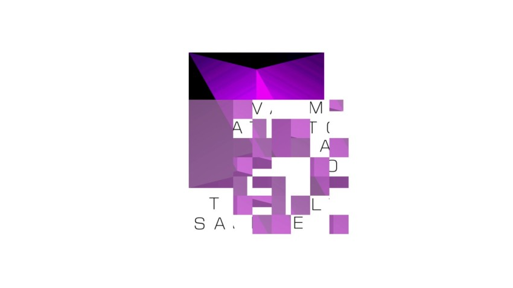
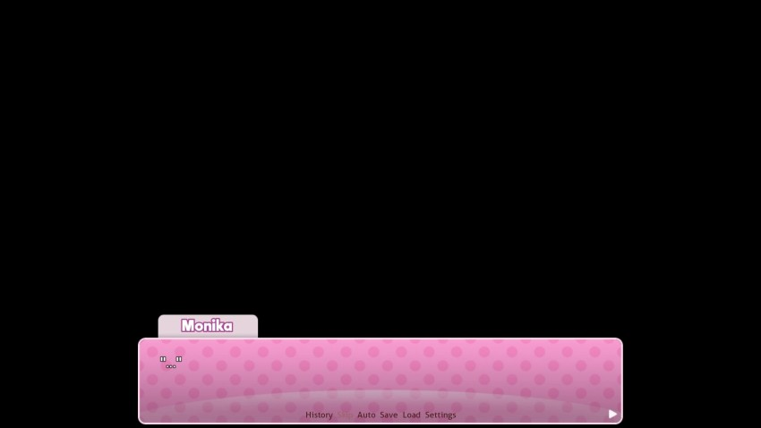
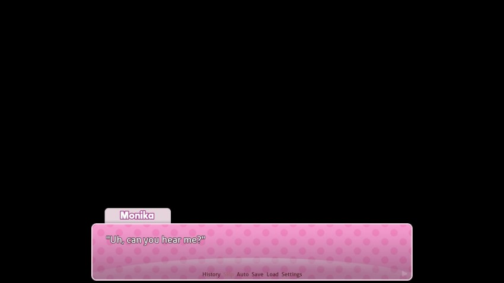
BGM: Just Monika. **New!**
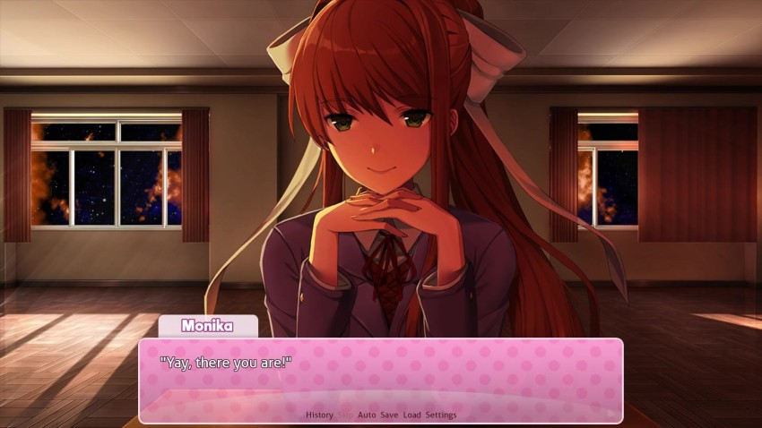